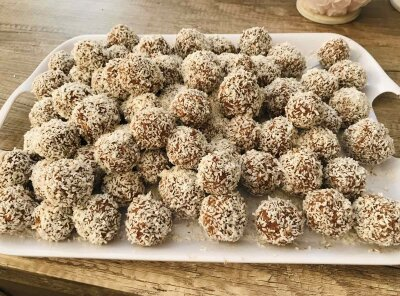

Рецепта за бисквитени бонбони
Необходими продукти:
- 1 пакетче бисквити „Еверест орехи”
- 1/2 чаена чаша смлени орехи
- 1/2 чаена чаша пудра захар
- 1 супена лъжица какао
- 50 мл прясно мляко
- 60 г масло
- 1 ванилия
Начин на приготвяне:
Бисквитите се смилат, след което към тях се прибавят орехите,
|
 |